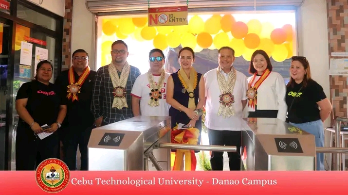
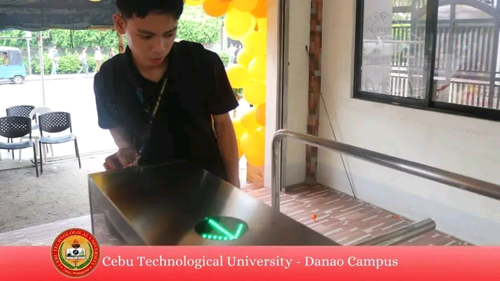

Enhancing Campus Security and Monitoring: The New Entrance and Exit System at Cebu Technological University
Cebu Technological University (CTU) has implemented an innovative entrance and exit system designed to improve campus security and streamline the monitoring of student and staff activities. The new system integrates a login and logout feature that automatically records entry and exit times through ID scanning technology.
How the System Works
The entrance and exit system leverages advanced ID card technology embedded with QR codes or RFID chips. Here's how it operates:
1. ID Scanning Stations: Scanning devices are installed at all campus entry and exit points. These devices are designed to quickly read ID cards issued to students, faculty, and staff.
2. Login/Logout Feature: Upon scanning, the system logs the user’s entry or exit time in real-time, updating a secure database.
3. Data Integration: The scanned data is integrated with CTU’s centralized management system, allowing administrators to track attendance, generate reports, and ensure compliance with campus policies.
CTU plans to enhance the system by integrating biometric scanning for an added layer of security. Additionally, mobile app integration is under consideration to allow users to pre-schedule visits and receive notifications about campus events and policies.
The entrance and exit system with a login and logout function demonstrates Cebu Technological University's commitment to innovation, security, and efficiency. This technological advancement not only safeguards the campus but also optimizes administrative processes, reinforcing CTU’s position as a forward-thinking institution.